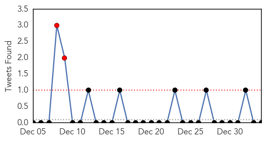
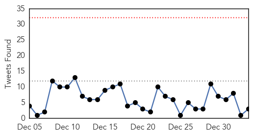

Influenza
30-Day Web Trend
1 alerts, 0 warnings

30-Day Twitter Trend
2 alerts, 0 warnings

Article Locations

Article Confidences

Top Articles:
- 0.998
- Cedar Rapids, Iowa News, Sports, and Weather
- 0.998
- Deadly Flu Stomping SE Michigan – Deadline Detroit
- 0.997
- Flu declared an epidemic; Aiken County cases on the rise
- 0.996
- Major Health Partners not enacting highest restriction level for flu
- 0.992
- Grand Junction hospital limits visitors due to flu
- 0.992
- Flu reaches epidemic levels across the mainland U.S.
- 0.990
- Flu prompts local hospitals to ban children from visiting
- 0.983
- Spate of new deaths raises Indiana flu toll to 36
- 0.983
- Sussex hospitals curb visitation in wake of flu spike
- 0.973
- Pharmacies well prepared for flu
- 0.967
- News, Sports, Jobs, Ohio, Community Information - The Marietta Times
- 0.937
- Child’s death becomes third in B.C. linked to enterovirus D68
- 0.918
- Guangdong Slaughters For-Export Chickens Infected with H7N9 Virus : News : Yibada
- 0.916
- Flu Season Will be 'Significant' With Weak Vaccine, Tamiflu Shortages
- 0.892
- Local Hospital Restrictions Target Flu
- 0.869
- Hong Kong culls 19,000 chickens after bird flu detection
- 0.642
- Avian flu detected in Benton City backyard flock
- 0.625
- Bird flu strikes backyard flock in Washington
- 0.594
- Seoul Grand Park Closes Over Bird Flu Concerns
- 0.543
- Guangdong culls chickens ...｜Society｜WCT
Top Tweets:
-
No tweets found for Jan 03, 2015
Ebola
30-Day Web Trend
0 alerts, 0 warnings

30-Day Twitter Trend
0 alerts, 0 warnings

Article Locations

Article Confidences

Top Articles:
- 1.000
- U.N. aims to get Ebola cases to zero in 2015
- 1.000
- 20,000 cases on, Ebola mysteries remain
- 1.000
- Ebola in UK: Patient being tested for deadly virus at Swindon's Great Western Hospital
- 1.000
- UK Ebola nurse Pauline Cafferkey now in 'critical condition' after health deteriorates in London hospital
- 1.000
- Nearly 40 years and more than 20,000 cases in, many Ebola mysteries remain
- 0.999
- Ebola-struck UK nurse in 'critical' condition
- 0.999
- Ebola-hit UK nurse in critical condition
- 0.999
- Top UK doctor: Ebola screenings should be improved
- 0.999
- Ebola hit UK nurse now in critical condition
- 0.999
- Potential Ebola case being monitored in Berlin
- 0.999
- Ebola in Sierra Leone's Kailahun: from hotspot to zero infections
- 0.999
- Suspected South Korean Ebola Patient Transported to Germany
- 0.999
- Ebola-infected UK nurse fighting for her life (Update 3)
- 0.999
- Royal Free London Hospital : Pauline Cafferkey, British nurse infected with Ebola in a critical condition
- 0.999
- Ignore predictions of lethal pandemics and pay attention to what really matters
- 0.998
- South Korean medic evacuated over Ebola fears
- 0.998
- Ebola in Britain: Cameron prays for nurse in critical condition
- 0.998
- Ebola death toll nears 8,000: WHO
- 0.998
- British nurse Pauline Cafferkey battling Ebola in London hospital is 'critical'
- 0.998
- Ebola outbreak can be stamped out' says chief of UN mission Anthony Banbury in Africa
- 0.998
- Patient being tested for Ebola virus at south west hospital
- 0.998
- First Ebola Patient Diagnosed in U.K. in Critical Condition
- 0.998
- Haitian Government denies presence of Ebola in Haiti amid spread of rumors
- 0.998
- Ebola-hit UK nurse Pauline Cafferkey in critical condition
- 0.997
- British Ebola nurse in critical condition, hospital says
- 0.997
- E. Texas doctors say flu patients shouldn't rush to the ER - KTRE.com
- 0.997
- E. Texas doctors say flu patients shouldn't rush to the ER - KLTV.com-Tyler, Longview, Jacksonville, Texas
- 0.997
- Get a handle on Ebola
- 0.997
- UK passengers on Ebola flights traced
- 0.996
- Ignore predictions of lethal pandemics and pay attention to what really matters
- 0.996
- UK Ebola nurse Pauline Cafferkey 'in critical condition'
- 0.996
- UK Ebola nurse Pauline Cafferkey 'in critical condition'
- 0.995
- Ebola in the UK: New suspected case in South Gloucestershire, as Scottish nurse worsens
- 0.995
- Somalia denies registering first Ebola case
- 0.994
- S. Korean health worker tests negative for Ebola in preliminary test
- 0.993
- London Hospital Says British Ebola Patient in Critical Condition
- 0.993
- SKorean Ebola medic flown to Germany for anonymity
- 0.992
- KBS World Radio
- 0.992
- British Ebola Nurse Now Critical In Hospital
- 0.991
- American survivors of Ebola recount their experiences
- 0.991
- First Ebola victim may have been infected by bats
- 0.991
- Gulf Daily News World News Ebola fight may be won this year says UN
- 0.990
- South Korean suspected of Ebola hospitalised in Berlin
- 0.990
- San Angelo Standard Times
- 0.990
- Ebola volunteers: Confronting crisis is ‘the right thing’
- 0.990
- South Korean suspected of Ebola hospitalized in Berlin
- 0.989
- Scottish nurse with Ebola listed in critical condition
- 0.989
- British Ebola nurse ′critical′ after condition worsens
- 0.988
- Ebola Sufferer Nurse Pauline Cafferkey 'Deteriorating' And Condition Is Critical, Royal Free Hospital Says
- 0.988
- (LEAD) S. Korean healthcare worker suspected of Ebola contraction in stable condition
Showing top 50 articles...
Top Tweets:
- 0.946
- Guinea Liberia & Sierra Leone now have sufficient capacity to isolate & treat 100% of Ebola patients. EbolaResponse
- 0.594
- RT: UNICEF hunting the ebola virus http://t.co/tZEEngXmzM EbolaResponse
- 0.549
- The Ebola epidemic: a transformative moment for global health | @WHO http://t.co/wmZNeSXZN1